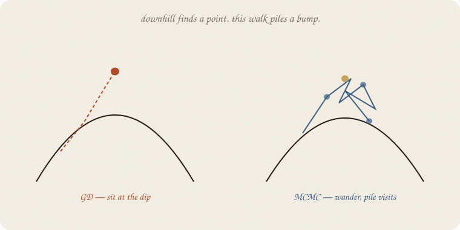
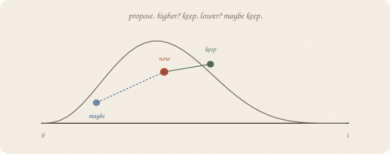
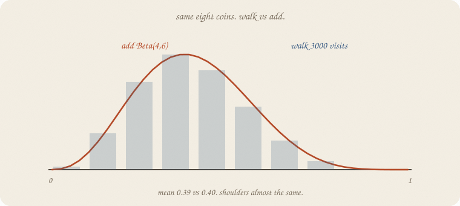
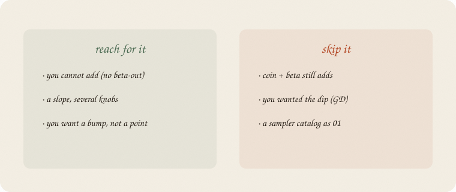

datazines · a sketchbook

Read 01 prior and 01 gradient descent first. Same eight coins, house seed 7, 3 yes / 5 no. Prior still adds: Beta(4, 6), mean 0.40. This notebook pretends we cannot add, walks anyway, and checks the pile against that bump.
This is 02 of Bayes. A walk, not a catalog of samplers.
Flip it like a notebook. One page = one idea. Done.
01 gradient descent walks a bowl downhill and stops at a point: ŷ’s leftover² as small as it gets.
The posterior is also a height on knob-land: how much this P likes the coins, times the prior. If you only sit at the peak, you get a point. Bayes wanted a bump — mean and width.
So you walk around, not only down. Visit high places often, low places rarely. The histogram of visits is the posterior.
People call this Markov chain Monte Carlo. Ugly. Friendly job: wander the bump; the pile is the answer.
On a coin we can add. We walk anyway so you can see the pile match. A slope with a prior usually cannot add. Then this walk is the method, not a demo.
Stand at a P. Propose a neighbor (a small nudge).

If the neighbor is outside 0–1, stay. Repeat. Throw away the first stretch (you started at 0.5; that was a guess). The rest is the pile.
Quiet nudge: you crawl, accept almost everything. Loud nudge: you jump, reject a lot. Interview stride here: 0.12. Accept rate 0.77. Not a moral.
This flavor is Metropolis. Other walks exist. Same job.
Same coins. Flat prior. Height ∝ P³ (1−P)⁵ — three yes, five no.
4000 steps, drop the first 1000.

| mean | 5% | 95% | |
|---|---|---|---|
| add Beta(4, 6) | 0.40 | 0.17 | 0.66 |
| walk 3000 visits | 0.39 | 0.17 | 0.65 |
Close enough. Eight coins, a whisper either way. The walk did not need the beta formula. It only needed a height at each P.
That is the gift when you cannot add: if you can score a guess, you can pile guesses.
If you keep only one thing:
cannot add? walk the height. the pile is the bump.
Same 3 yes, 5 no. Flat prior. Metropolis on P. House seed 7. No extra library.
import numpy as np
yes, no = 3, 5
def log_post(p):
p = np.clip(p, 1e-9, 1 - 1e-9)
return yes * np.log(p) + no * np.log(1 - p)
rng = np.random.default_rng(7)
n, step, burn = 4000, 0.12, 1000
p, lp = 0.5, log_post(0.5)
chain = np.empty(n)
acc = 0
for i in range(n):
q = p + rng.normal(0, step)
if 0 < q < 1:
lq = log_post(q)
if np.log(rng.random()) < lq - lp:
p, lp = q, lq
acc += 1
chain[i] = p
post = chain[burn:]
print("accept rate", round(acc / n, 2))
print("walk mean", round(post.mean(), 3))
print("walk 5%", round(float(np.quantile(post, 0.05)), 3),
" 95%", round(float(np.quantile(post, 0.95)), 3))
from scipy.stats import beta
d = beta(4, 6)
print("add mean", round(d.mean(), 3),
" 5%", round(d.ppf(0.05), 3),
" 95%", round(d.ppf(0.95), 3))
print("first 8", np.round(chain[:8], 3).tolist())
accept rate 0.77
walk mean 0.39
walk 5% 0.174 95% 0.648
add mean 0.4 5% 0.169 95% 0.655
first 8 [0.5, 0.467, 0.413, 0.42, 0.361, 0.42, 0.432, 0.429]
Start at 0.5, wander. Mean 0.39 vs add 0.40. Shoulders 0.17–0.65 vs 0.17–0.66. First steps already leave 0.5. step is the nudge, not GD’s learning rate — same quiet habit, different job (pile, not dip).
| word | meaning |
|---|---|
| height | posterior at this guess (prior × likelihood) |
| propose | a neighbor |
| accept | keep the neighbor (always if higher; maybe if lower) |
| chain | the walk |
| pile | visits after the first stretch = the bump |
| Metropolis | this propose / maybe-keep |
Also called: MCMC = wander the posterior · burn-in = drop the first stretch · accept rate = how often you moved.

Reach for it when you cannot add (no beta-out), you still want a bump, and you can score a guess.
Skip it when coin + beta still adds (01 prior); you wanted the dip (01 gradient descent); you wanted a catalog of samplers as 01.
Pays you: a posterior without a named bump. Same coins, a pile that matches the add — so you trust the walk when add is gone.
Costs you: many steps. A nudge to pick. The first stretch is a lie. Not a point estimate. Not a library.
Bayes 02. Walk the height. Next: 01 the loop — state, action, reward, next. Not a sampler catalog.
Flip it like a notebook. One page = one idea.